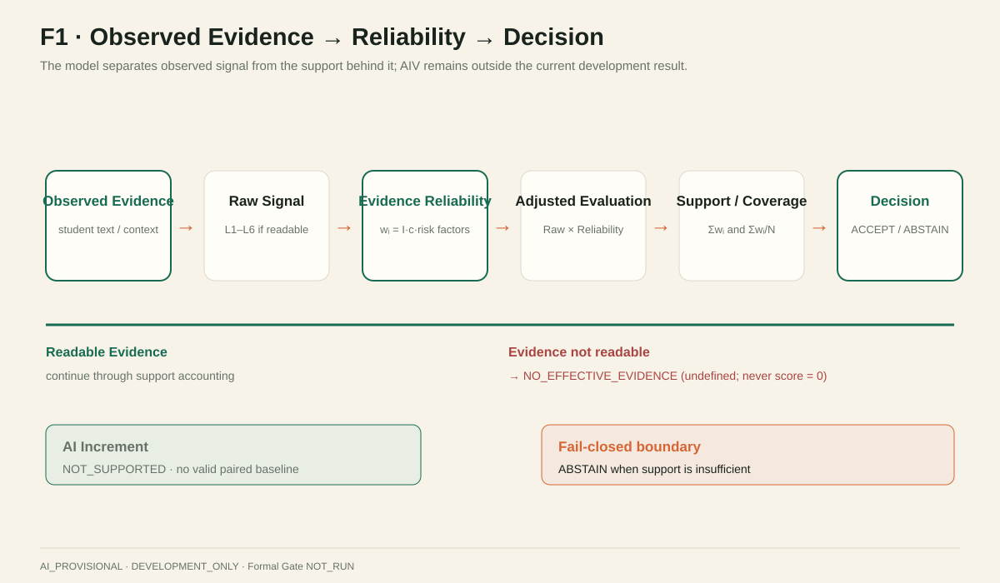
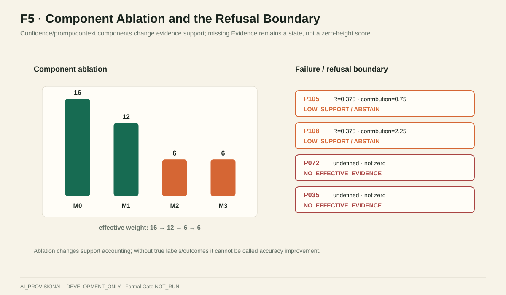
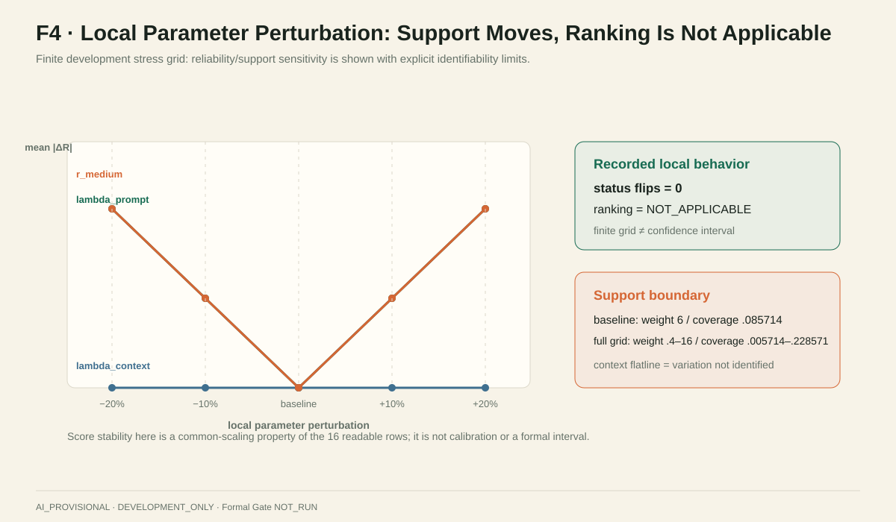
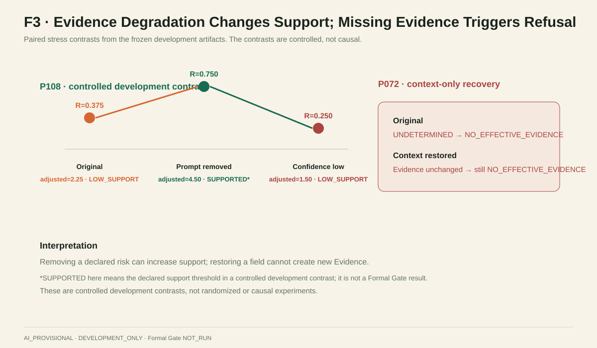
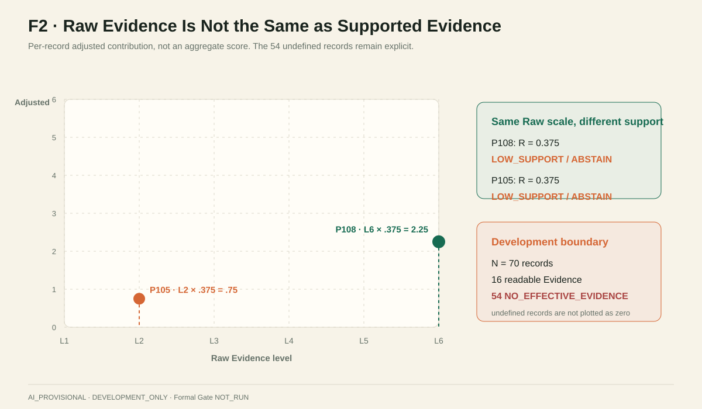
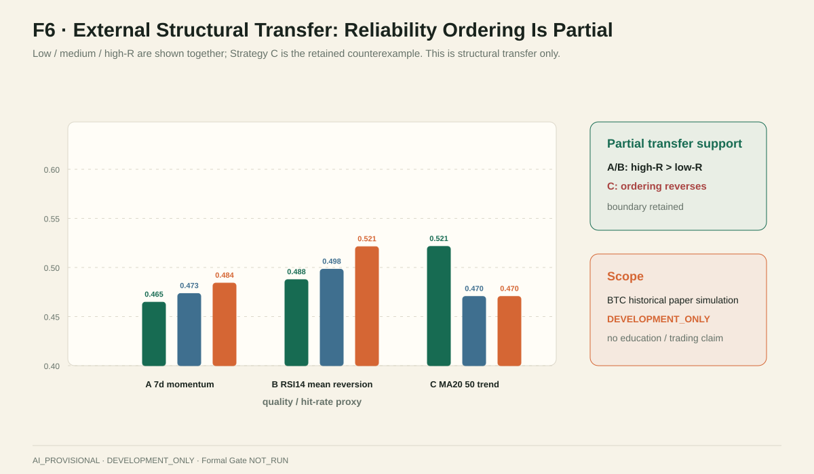

当观测不等于证据
Evidence-Aware Evaluation Framework
Separating Observed Performance from Evidence Support
Research Question
为什么 Raw 不够？AI 辅助学习里，学生的答案与操作并不都同样可信：有的记录信息完整、独立完成，有的带明显 AI 引导、上下文截断或来源冲突。Observed Result ≠ Reliable Evidence。
可判读 16 条的等级构成：L2×5、L3×5、L4×1、L5×2、L6×3。54 条无有效证据的记录保持未定义，不填 0 分。
Core Model
把「表现」与「支撑」拆成两个量先确认存在可判读证据，再按置信度（ci ∈ high 1 / medium 0.75 / low 0.5）、提示风险 pi 与上下文风险 ti 给支持权重；默认 λprompt = 0.5、λcontext = 0.5。乘法结构让低支持贡献不被放大。

Interactive Exploration
确定性复算 · 非正式实验冻结公式对输入字段的机械响应：调参数 → Reliability → Adjusted → Decision。不调用任何 LLM / 网络 API，不产生新实验、不构成研究证据。默认 λprompt = 0.5、λcontext = 0.5、rmedium = 0.75。
两条记录在开发切片中均为 prompt_induced = true、context_truncated = false、confidence = medium；此处可手动切换以观察公式响应。
Core Finding
整站最重要的一张图| Model | Components | Score (ABL) | Effective Support | Coverage（分母 N = 70） |
|---|---|---|---|---|
| M0 | 无校正（Raw-only） | 3.5625 | 16 | 0.228571 |
| M1 | + confidence | 3.5625 | 12 | 0.171429 |
| M2 | + confidence + prompt | 3.5625 | 6 | 0.085714 |
| M3 | + confidence + prompt + context | 3.5625 | 6 | 0.085714 |
prompt 模块承担当前切片的主要支持下降（M1 → M2）；context 模块在 16 条可判读记录中无变异（M2 = M3），因此其独立效应不可识别 —— 不等于「已证明无作用」。16 条可判读记录共享 prompt = true / context = false / confidence = medium，各加权方案施加同一常数因子，归一化后抵消，因此 Raw 与 Adjusted 同值，不得写成 improvement。

Five Validation Paths
同一命题的五条互补检查
Failure Cases
模型在哪里拒绝下判断P108 · 高 Raw / 低支持
Missing Evidence
说明无论 Raw 高低，缺少支持时都被降权 —— 降权来自证据，不来自分数。以上均为 DEVELOPMENT EXAMPLE / AI_PROVISIONAL。


Challenger Models
不做 winner 排名- Transparent：每一项权重可追溯到输入字段
- Auditable：确定性复算，无需重训
- Abstention-aware：证据不足即拒判，不伪造 0 分
- CV accuracy：LogReg ≈ 0.876 · Tree ≈ 0.919 · RF up to ≈ 0.922
- 但：正例仅 n = 16、代理标签、无 holdout
- 缺失降级至 0.71 – 0.81；RF 跨学期 0.588
- Additive：B(λ = 0.5) RMSE vs Raw = 0.3125（最小）
- Gated：C 在 16 条可判读记录上全部 ABSTAIN
- Nonlinear：rank stability 1.0，但可解释性下降
External Structural Transfer
失败结果同样保留
Evidence Boundary
当前证据能支持什么、不能支持什么这不是「自曝缺点」，而是证据边界：明确划定结论的适用范围，是这套方法本身的一部分。
- R1 = 0 / 70 · R2 = 0 / 70
- Formal Gate = NOT_RUN
- 全部数字来自 AI_PROVISIONAL 开发切片，不得升级为正式验证结果
- 仅 16 条可判读，54 条 NO_EFFECTIVE_EVIDENCE
- 16 条高度同质：全部 prompt = true、context = false、confidence = medium
- 因此 prompt / context 惩罚未被经验识别，只是假设性边界
- 不能证明 accuracy improvement，也不能证明 causal learning gain
- ABSTAIN 不等于「预测正确」；NEE 不等于「模型失败」
- AI 增量识别 = NOT_SUPPORTED（无合法配对 outcome）
- BTC 案例只说明接口可运行，不是教育泛化证据
- Gate3 NOT SUPPORTED、risk-coverage improvement = false 必须同时呈现
- 参数 ci / λ 为 WEAKLY_JUSTIFIED_COMPONENT，未校准为概率
模型当前评价的是 AI 辅助环境下的可观察表现与证据支持程度，不能推出学生真实能力提升、长期学习增益、AI 因果效果、正式 AI 增量或能力排名。
Conclusion
一屏结论把「看见的分数」与「支撑它的证据」分开报告
评价系统必须同时给出 Raw、Evidence Reliability、Adjusted 与 Evaluability；只有分数，会掩盖证据支撑的塌缩。
在本开发切片上：Score 恒为 3.5625，而 Effective Support 由 16 降到 6、Coverage 由 0.228571 降到 0.085714 —— Score Stability ≠ Evidence Support Stability。
证据不足时，模型选择 ABSTAIN 或返回 NO_EFFECTIVE_EVIDENCE，而不是伪造一个确定的数字。全部结论限于 DEVELOPMENT_ONLY，正式结论须等待 Human Gate 完成。